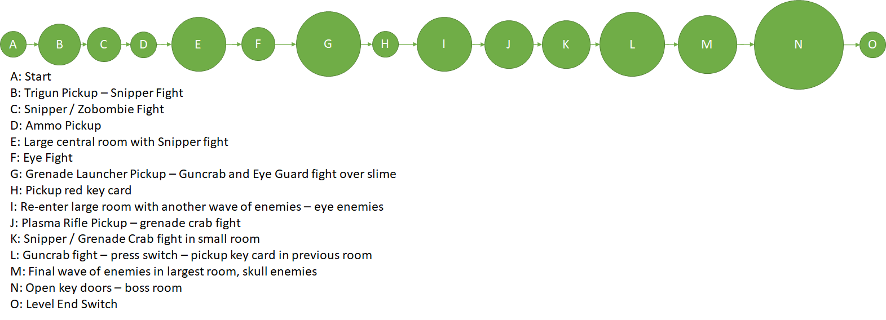
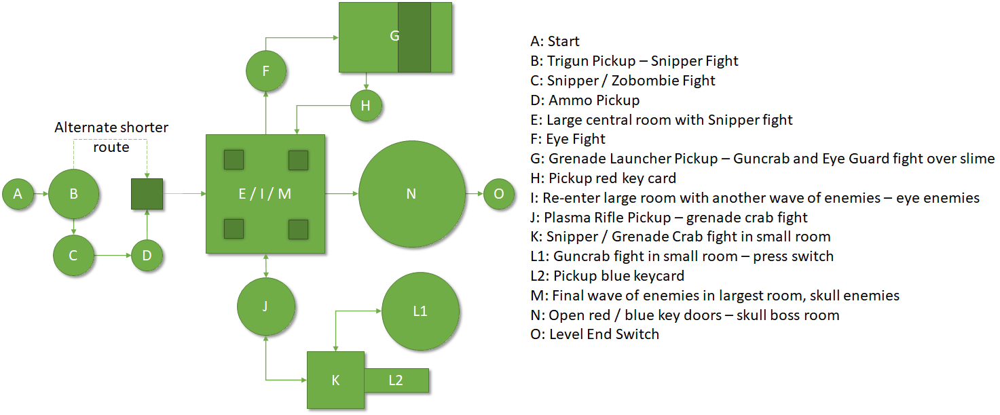
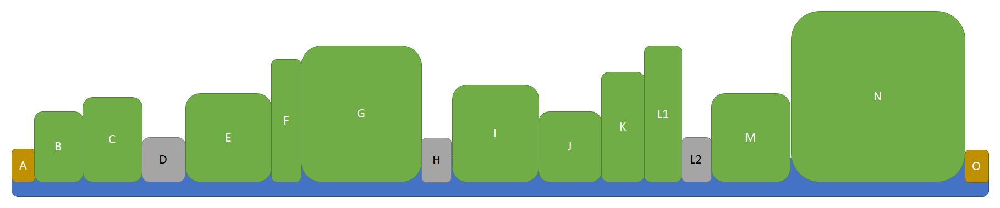
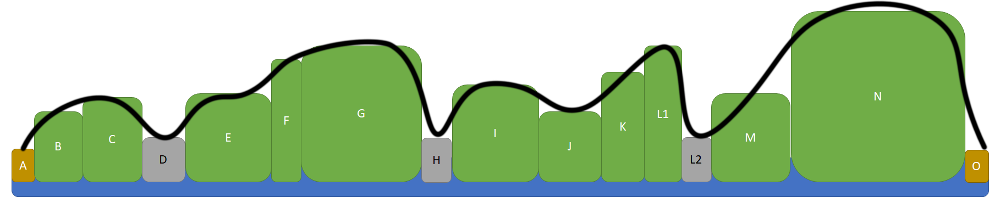
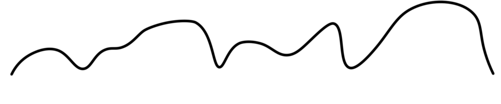
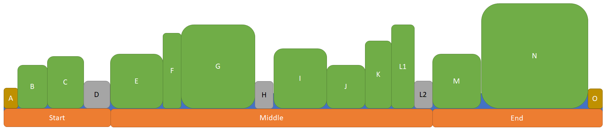
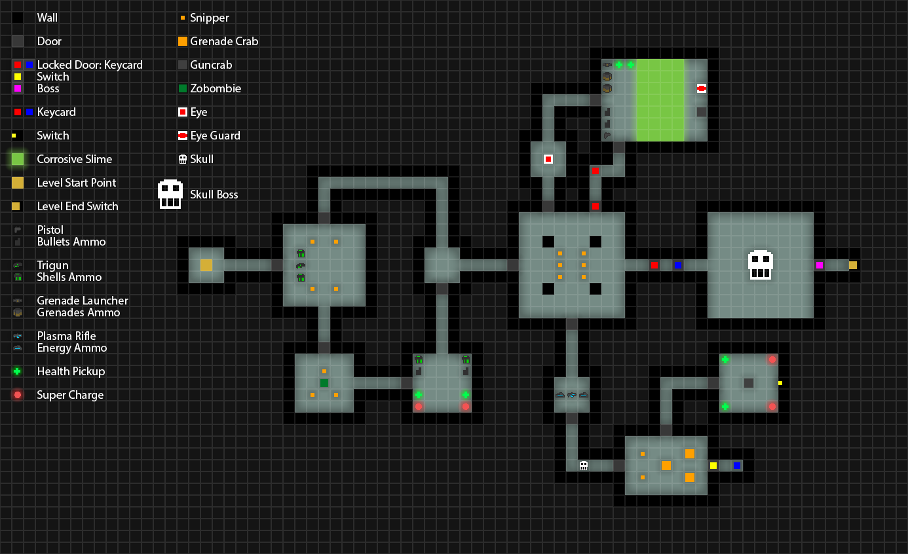
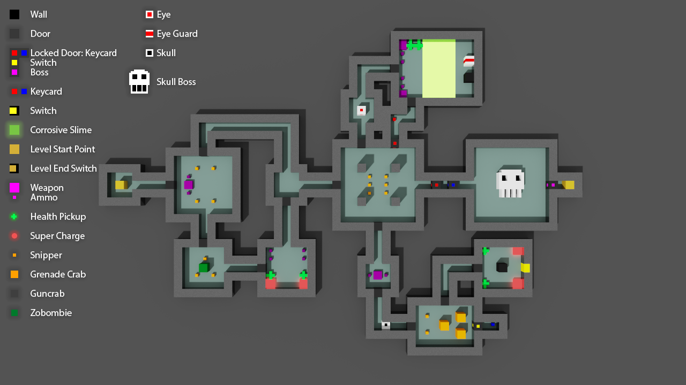

To start with getting ideas for the level, I began to experiment with the different elements of the game and how they could interact with each other. One particular idea I wanted to try was to require the player to shoot at the enemies from the other side of a pool of slime, stopping them from getting up close. I also experimented with the use of switches and the skull boss.
One particular bug I found with the ideas I'd set up was the boss spawning the minion enemies inside the windows. During testing, I found that the enemy spawned in the window when it was only one tile high (at the time, there was still a gap between the window and the ceiling). Before recording, I assumed the issue was just the enemy being spawned above the window and getting stuck, but more testing showed that it was just how the boss worked. If this is the boss I choose to use, then I will have to create an empty room to fight it in.
With the slime obstacle I had set up, I found it somewhat hard to aim properly with the Grenade Launcher and Plasma Rifle weapons I had already started it with. While the idea is still something I might want to add into my level design, I'll use the other two weapons as they are more accurate when making precise shots and have less recoil to them.
By spending some time learning how the different gameplay elements worked, it has given me a better and more focused idea on how I want my level to play.
LEVEL ITERATION 1
To get some ideas together for my level, I sketched down a basic idea for how I wanted my level to look on paper, with my plan to then refine and tweak the ideas as I convert it into a bubble map. I made three passes, adding on extra details like potential weapons, pickups and enemy placement.
Level Sketches
I specifically thought about what elements from my testing process could be used in the level, which I reflected in most of the top portion of the level (getting the red keycard) being very similar to what I had already created. I moved the roaming skull to another part of the level to have a variety of enemies in different places, focusing on the eye enemies on the top path, skull enemies on the bottom path and interspersing the crab enemies throughout.
I then converted this into two iterations of bubble maps, and created a beats and pacing diagram for what I wanted the level to be paced.
BUBBLE MAPS AND BEATS & PACING DIAGRAM
Bubble Map First Iteration
Bubble Map Second Iteration
Beats Map
Beats & Pacing Diagram
Pacing Curve
For the level pacing, I intend to try and follow the 3 act structure by having 3 distinct peaks in each 'section' of the level (beginning, middle and end). By trying to stick to this structure, I hope that it will help to pace my level well so that it is more enjoyable for the player to play through.
PIXEL & VOXEL MAPS
I then took the refined bubble map design and created a pixel map from it, using the alyout I had sketched as a basis for th level layout.
Base Level Pixel Map
Because the player passes through the middle room multiple times, I also added the changes in enemies on different layers. The full pixel map shows the enemies in the first wave, and the single room maps show the waves after getting the red and blue keycard respectively.
3D Voxel Map
Once the pixel map had been completed, I adapted it into a 3D voxel map in MagicaVoxel. To make the creation of the 3D map easier, I show all weapons as one icon, and all ammo as another. I also made versions that shows the second and third enemy waves for the main room.
Critical Path
The final part of the level designing process was to overlay a critical path onto the pixel and voxel maps to show what path I would want the player to take through the level. To do this, I overlaid and positioned the second iteration bubble map into its correct position. I overlayed it onto both the pixel map and voxel map.
LEVEL CREATION
Finally, I had all the design documents necessary to build the level in the engine. I went about this by placing in all the rooms in the level first, then going back and adding the gameplay elements like doors, enemies, weapons and pickups. Setting up the multiple waves of enemies to spawn in the main room and the boss room took the longest time as I had to make sure everything spawned as I intended. The screenshots show the level having the rooms themselves in, and then having the other elements added in after.
ITERATION 1 LEVEL PLAYTHROUGH
Iteration 1 Analysis
After playing through the level multiple times, I could easily identify some glaring flaws in the design I had created.
Firstly, I had not placed enough weapon and ammo pickups in the level, changing it from being a typically DOOM-style shooter to a game more about ammo conservation and trying to get through the level with as little as possible. While this could potentially create some interesting gameplay scenarios, this isn't something I was trying to achieve with the level and it actively works against the beats and pacing diagram I created by keeping the intensity of the level high, so I will need to tweak these elements for a second iteration. The way I envision doing this is to have a large ammo room that's unlocked by the switch as well as the door to the blue keycard; the most likely position for it is going to be in the alternate corridor as a reward for players who explore more of the level. I also want to increase the amount of ammo and health pickups that are scattered around the level, so that the player is not constantly running out of them (I might add some more in more out-of-the-way locations in the level to reward more exploration). My final idea to help improve this is to have a checkpoint-style room before the boss fight.
Next, I want to cut down on the scale of the level, meaning the player does not have to run as far. Some of the rooms feel too big for their encounters, so I want to combat this feeling of overwhelming scale by streamlining the level's design. Also, as is evident in the video, I forgot to add any checkpoints into the design of my level; adding these will immensely improve how my level plays.
Finally, I want to tweak enemy encounters so that it matches my desired pacing closer, as I feel some of the areas of the level vary wildly from what I originally intended to go for. Some enemy encounters can be over in a matter of seconds with relative ease, while others are much longer and more difficult. While this is fine for comparing the start and end of a level, I feel this is a problem that is present throughout the entirely of my level.
Despite the disappointment of how my level design ended up turning out in its first iteration, I always knew that changes would most likely be needed to be made, and it has motivated me to continue on with honing my design into a fun level.
LEVEL ITERATION 2
The first issue I wanted to combat with the design of my level was the scale. To do this, I made a copy of my pixel map with only the core gameplay elements in it and created a new version by coming up with new designs, tweaking the design in-engine and adjusting the pixel map accordingly based on whether or not I liked the way the change affected the level.